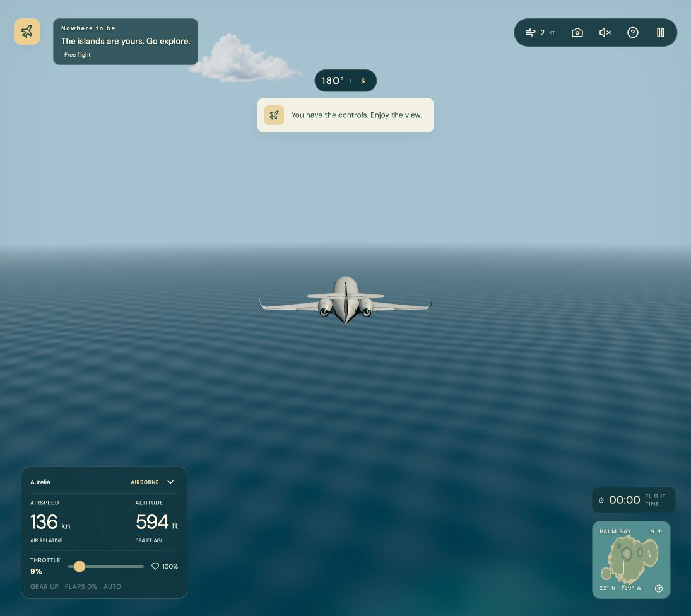

Pocket Flight: island physics implementation
Saved 13 October 2026 · model island-rigid-body-1 · aircraft order: Aurelia → Finch → Peregrine → Stormbird.
The first implementation pass is integrated into the site checkout. Game and wind-tunnel compilation/builds succeeded. Fleet calibration traces are recorded. Full mission playthroughs and sustained browser performance acceptance remain unverified.
What changed
- Aircraft motion: quaternion orientation, center-of-mass translation and full body inertia. Ground contact supplies impulses at each wheel; the aircraft is no longer leveled or height-snapped every step.
- Wheels: measured attachment points, unilateral suspension, damping, steerable nose tires, rolling resistance, main-wheel braking and coupled tire friction limits.
- Structural contact: mesh-derived compound airframe probes sweep against island terrain and scenery cylinders. Conservative local terrain bounds skip distant-ground work. Strikes apply a physical impulse at the contact point.
- Damage: separate left/right wing damage changes lift and roll response; serious wing strikes remove that side's lift and collider. Gear damage changes suspension/braking. Engine/propeller damage changes propulsion. Wrecks continue through the same contact solver.
- Assistance: optional beginner assistance requests bounded control-surface movement. Near-ground rotation protection reduces accidental tail strikes through elevator commands.
- Configuration: Settings → Controls → Automatic gear and flaps is independently persistent. Manual G toggles gear; F cycles flaps. Ground retraction is blocked. Turning automation off holds the actual positions. Finch keeps its fixed gear and has no movable flaps.
- HUD/replay: actual gear/flap positions and mode are visible. Replay frames retain configuration, trim, simulation tick and physical suspension marker. Existing recordings can omit the new fields. Detached debris remains visual.
- Launches: air starts use solved trim. Free flight starts above Palm Bay and points out toward the coast; canyon starts account for each aircraft's stall speed.
- Island envelope: 1,800 m ceiling retained. Thrust fades approaching each aircraft's subsonic target and excess speed adds dissipative drag. This is soft protection, so an externally seeded overspeed can temporarily exceed the target.
Recorded aircraft calibration
These are zero-wind numerical tuning scenarios, not human-flown mission completions. Departures stop three seconds after liftoff; approaches are seeded above Palm Bay and brake to rest. Unassisted level trim is followed for ten seconds at 600 m. All reported final states were finite.
| Aircraft | Liftoff speed | Liftoff health | Touchdown sink | Approach final | Trim altitude drift | Mach target |
|---|
| Aurelia | 50.6 m/s | 100% | 1.38 m/s | 100% / <0.001 m/s | 3.6 mm | 0.60 |
| Finch | 31.0 m/s | 100% | 0.30 m/s | 100% / <0.001 m/s | 0.4 mm | 0.25 |
| Peregrine | 50.0 m/s | 100% | 1.74 m/s | 100% / <0.001 m/s | 7.6 mm | 0.70 |
| Stormbird | 53.5 m/s | 100% | 1.79 m/s | 100% / <0.001 m/s | 9.9 mm | 0.70 |
All four thin-pole scenarios recorded a left-wing crash impulse and asymmetric wing damage. Retractable aircraft completed manual deployment commands; all aircraft rejected gear retraction on the ground. Engine-out runs lost altitude and airspeed. Taxi traces stayed healthy; Stormbird still had 1.35 m/s remaining after the fixed ten-second braking window, while its longer approach trace stopped.
The twenty-second dive traces peaked at M0.560 / M0.495 / M0.628 / M0.668 in alphabetical order. Finch was deliberately initialized above its M0.25 target; its final speed recovered to M0.118. These traces demonstrate bounded subsonic scenarios and overspeed recovery, not a hard Mach clamp under every possible state.
Build and browser evidence
- Main game: TypeScript + Vite build completed; bundle-size warning remains.
- Wind-tunnel lab: TypeScript + Vite build completed; bundle-size warning remains.
- Codex in-app browser: Settings toggle visibly changed; manual G/F deployment and pitch input were observed during the implementation pass. Final coastal Aurelia launch is paused at 100% health with gear up, flaps zero, and automation on.
- Captured browser console review returned no warning/error entries.
- Final browser snapshot reported 40 FPS, 238 draw calls and 564,864 triangles. This is a snapshot, not a sustained performance measurement; 60 FPS acceptance has not been established.
- No unit tests or full test suite were run. Full fleet browser missions, human landings, legacy replay loading/export and sustained performance still need acceptance review.
Open the running local game · Calibration JSON · Calibration log · Game build log · Lab build log · Browser snapshot

Repeatable workflow
cd '/Users/prasiddhnaik/Documents/blender skills/pocket-flight-site'
export PATH="/Users/prasiddhnaik/.bun/bin:$PATH"
bun run physics:measure
bun run physics:calibrate
bun run build
bun run lab:build
physics:measure regenerates collision probes from the saved aircraft meshes and records asset hashes. physics:calibrate records the alphabetical tuning scenarios and source fingerprints. It writes observations without a test runner or pass/fail assertions.
Practical limits
- Compound spheres and scenery cylinders approximate the mesh; terrain sweeps use sampling and bisection, not triangle-exact continuous collision.
- Stormbird wheel folding follows its authored leg transforms. Aurelia/Peregrine wheel retraction paths are simplified vertical paths.
- Damage and debris are game approximations: engines use aggregate damage, detached fragments do not receive independent collision/mass transfer, and replay remains recorded visual poses.
- The broader Settings redesign, high-altitude atmosphere/flight and supersonic flight are reserved for the backlog.
Combined release scope and recovery
The requested site release also includes all current aircraft accuracy, Finch internal-system, animated cockpit, validation-bench, menu and soundtrack changes in this checkout. The other chat’s reported tests describe that earlier pass; this combined release has been compiled and calibrated without rerunning its test suite.
The pre-existing dirty working tree was recorded before implementation. Its recovery patch and source archive remain in the local output/island-physics directory. Source hashes identify this implementation pass.
Agreed physics plan and research links · Deferred backlog